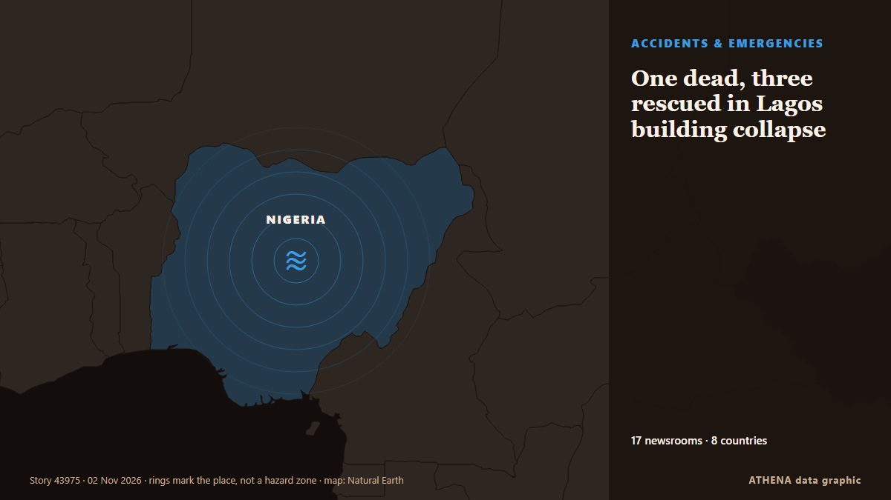

One dead, three rescued in Lagos building collapse

The Lagos State Emergency Management Agency (LASEMA) has confirmed one death and the rescue of three adult males following the collapse of a two-storey building under construction in Fadeyi, Lagos. de Vanguard
Relayé de façon indépendante par 17 médias dans 8 pays depuis le 23 oct. ; premier à l'annoncer : Vanguard ; la couverture faiblit. ATHENA juge le risque accru (4.3/10), surtout en raison de la gravité des dommages décrits et de sa portée géographique et sectorielle. La confiance est de 85 % (élevée) : 17 médias indépendants le confirment, avec une fiabilité moyenne des sources de 69 %. Médias par pays : Nigeria (25), Inde (4), Royaume-Uni (4). Couverture : du 23 oct. au 31 oct., 185 heures.
Pourquoi c'est important: Les changements juridiques et politiques modifient droits, obligations et services publics pour les personnes concernées.
Ce qui a changé : 1 nouvel article dans les 24 heures jusqu'au 2 nov..
Les titres sont affichés en anglais, tels que publiés.
En un coup d'œil
Sélectionné, noté et rédigé par la méthodologie publiée d'ATHENA. Aucun rédacteur n'intervient sur un événement en particulier. Comment il est produit ›
| 23 Oct 07:25 UTC | 3 |
|---|---|
| 23 Oct 19:25 UTC | 0 |
| 24 Oct 07:25 UTC | 0 |
| 24 Oct 19:25 UTC | 0 |
| 25 Oct 07:25 UTC | 0 |
| 25 Oct 19:25 UTC | 0 |
| 26 Oct 07:25 UTC | 1 |
| 26 Oct 19:25 UTC | 6 |
| 27 Oct 07:25 UTC | 2 |
| 27 Oct 19:25 UTC | 6 |
| 28 Oct 07:25 UTC | 5 |
| 28 Oct 19:25 UTC | 7 |
| 29 Oct 07:25 UTC | 4 |
| 29 Oct 19:25 UTC | 5 |
| 30 Oct 07:25 UTC | 0 |
| 30 Oct 19:25 UTC | 1 |
| 31 Oct 07:25 UTC | 2 |
| 31 Oct 19:25 UTC | 0 |
| 01 Nov 07:25 UTC | 0 |
| 01 Nov 19:25 UTC | 1 |
| 28 Oct 16:42 UTC | 7.8 |
|---|---|
| 28 Oct 23:42 UTC | 6.7 |
| 29 Oct 23:55 UTC | 6.8 |
| 30 Oct 07:46 UTC | 4.5 |
| 02 Nov 05:11 UTC | 4.3 |
Pourquoi ces chiffres
Importance
Risque
Confiance
La couverture : qui l'a annoncé, et quand
titre tel que publié · ouvre l'original- Vanguard · NigeriaOne dead, three rescued in Lagos building collapse
- Channels TV · NigeriaOne Dead, Three Rescued As Building Collapses In Lagos
- Daily Trust · NigeriaLagos: One dead, several feared trapped as building collapses
- NDTV · IndeSeveral Workers Trapped In Bengal Coal Mine After Pulley System Glitch
- Punch · NigeriaFire guts residential building in Anambra
- Punch · NigeriaTraders seek Lagos intervention to prevent market fires
- Punch · NigeriaMotorists groan as flood triggers gridlock in Lagos community
- Chronicle Live (Newcastle) · Royaume-UniBlyth Relief Road update with Government backing for £55m scheme 'off the table'
- Express Tribune · PakistanOne worker killed, six injured as under-construction plaza roof collapses in Multan
- The Hindu · IndeAll 14 workers trapped at Bengal coal mine rescued
- Graphic Online · GhanaAuthority begins Okada operator registration in November
- Punch · NigeriaPolice confirm three killed, inspector injured in Kebbi violence
- MyJoyOnline · GhanaOne dead, 14 injured in Akuse–Akosombo highway crash
- Punch · NigeriaSAHCO, Air Algérie seal ground handling deal
- Punch · NigeriaLagos to host African Brands Congress on AI
- Punch · NigeriaKebbi violence leaves three dead, residents fleeing communities
- Stuff · Nouvelle-ZélandePerson found dead in car crashed into water in Marlborough
- Punch · NigeriaLagos driver fleeing police arrest kills okada rider, injures two
- Birmingham Mail · Royaume-UniDeals struck at collapsed Midland flooring firm saving 147 jobs
- The Hindu · Inde26 dogs rescued from suspected meat trade in Assam
- The Herald (Scotland) · Royaume-UniFormer C&A building on Sauchiehall Street could be turned into 'boutique' hotel
- Irish Examiner · IrlandeHosanna in the highest bid: St Vincent's Church sale agreed at €400k
- The Hindu · IndeChild rescued in Ranipet; four persons held
- Belfast Telegraph · Royaume-UniVincent Kompany released from hospital following collapse last week
- Punch · NigeriaLagos tackling 3.3m housing deficit, says Sanwo-Olu
- Punch · NigeriaLagos court denies wheelchair-bound suspect bail over murder
- Punch · NigeriaResidents groan as blackout hits Lagos communities
- Punch · NigeriaLagos man bags life jail for defiling 11-year-old girl
- Punch · NigeriaLagos warns motorists against ember months recklessness
- Punch · NigeriaHealth firm offers free screenings at Lagos fitness event
- Nile Post · OugandaKompany discharged from hospital following collapse
- Nile Post · OugandaNBRB Cites Structural Flaws in Bwerenga Church Collapse
- Punch · NigeriaHMOs deny endorsing Lagos private health plan
- News Agency of Nigeria · Nigeria2027: Lagos group mobilises UK diaspora for Tinubu
- Punch · NigeriaHow Our five-year-old daughter was kidnapped in Lagos — Family
- Punch · NigeriaLagos mobilises students to tackle pollution, flooding
- Punch · NigeriaSix Lagos students win prizes in Green Essay contest
- Punch · Nigeria2027: Lagos to train security agencies on election coverage
- Punch · NigeriaResidents groan over deplorable Lagos community road, seek repair
- Punch · NigeriaHuman trafficking: Police rescue three girls in Lagos